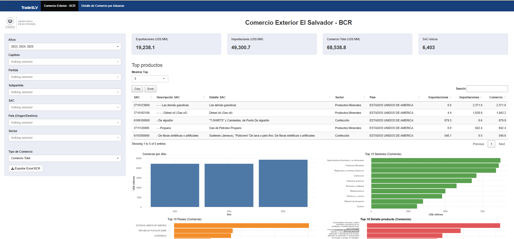
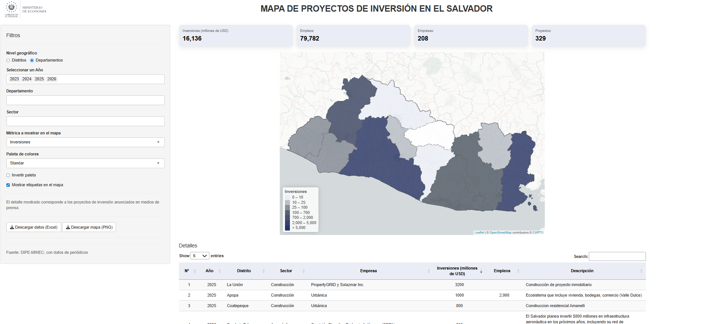

Development Economist · Researcher · Lecturer · El Salvador
Development Economics · International Economics · Economic Intelligence · Trade Policy · Applied Data Science
Development economist with more than ten years of experience across government, banking, applied research, and university teaching. My work combines international economics, economic intelligence, trade policy, quantitative analysis, and data-driven decision support.
Profile
I am a Development Economist with more than ten years of experience across government, banking, applied research, and university teaching. My work focuses on international economics, economic intelligence, trade policy, productive transformation, and evidence-based public policy.
I currently serve as Economic Intelligence & Policy Analyst at the Ministry of Economy of El Salvador and as National Focal Point for the World Bank B-READY assessment, coordinating technical work across 13 public institutions. I also develop analytical applications in R Shiny for trade, investment, and economic intelligence.
My research interests include international trade and development, credit allocation, productive linkages, economic complexity, finance and productivity, and the use of administrative and international data for applied economic research.
Career
Portfolio

Trade Policy
Interactive monitoring of exports, imports, trade balances, products, and trading partners using detailed trade data for policy analysis and economic intelligence.

Investment Analysis
Interactive monitoring of investment projects, sectoral and geographic distribution, employment creation, and key economic indicators for strategic analysis.
Recognition
Awarded by the Colegio de Profesionales en Ciencias Económicas de El Salvador in recognition of outstanding contributions to economic analysis and public policy.
Recognized by the Directorate of Commercial Policy for contributions to regional economic integration, including Guatemala, Honduras, Panama’s SIECA accession, and the Belize Partial Scope Agreement.
Formation
Contact
Interested in research and academic opportunities in international trade, development economics, applied economics, productive transformation, and data-driven public policy. Open to research collaborations with universities, multilateral organizations, and policy institutions.